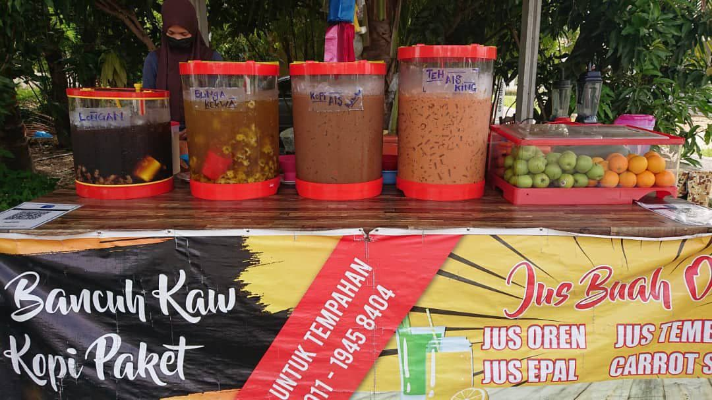

Work at Bancuh Kaw Store

Bancuh Kaw is a small business that sell various types of drinks such as ice tea and fruit juice.
After a few week, Bancuh Kaw grew with the sale of ice blended that offered a wide variety of
flavours. Bancuh Kaw started business from january 2021 until now, and located at Kaki Bukit,
Bukit, Beseri, Perlis.
My business is suitable for all customers regardless of age. In addition, the sale of ice blended
was well received by school students. Our way of selling this product is offline, where customers
will come to my store to make a purchase. While, marketing method for this business is by using
page in social media like facebook.
Next is about the progress of my busines. Bancuh Kaw start by selling a variety of drinks and releasing
new product with is ice blended. There are many types of drinks like coconut water, orange juice, apple
juice and ice tea. I decided to sell this product because this product is suitable for all ages. Besides,
ice blended is popular around young people and school students. I can say that coconut water is one of
the most popular drinks. It is also because of the hot weather in Malaysia.
There are some benefits of coconut water with are coconut water are natural because it make without
added sugar and food coloring. After a few days of sales and efforts to promote through soial media,
my business sales are increasing. Bancuh Kaw sold arround 46 cup of drinksing water per day.Other
than that, customer can contact my pnone numbeer that i was listed on the poster given.
|
|